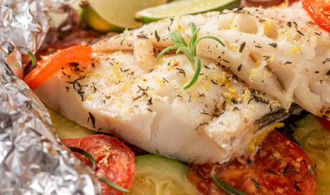

Filé de peixe assado

Descrição
Peixes permitem diversos tipos de preparações diferentes. Por ser leve, é a melhor pedida para dias quentes, ainda mais se acompanhados de saladas e
bebidas refrescantes.
Apesar de serem práticos de preparar, existem algumas recomendações que garantem o sucesso da receita e um prato maravilhoso.
Ingredientes
- 500 g de filé de peixe (tilápia, saint peter ou outro)
- 2 tomates picadinhos
- 1 cebola média picada em cubos
- cheiro-verde a gosto
- 1/2 colher (sopa) de sal
- azeite a gosto
- 4 batatas grande descascada em rodelas de 0,5
- 1/2 pimentão(se ele for grande)
- 1 colher (sopa) cheia de alcaparras
- coentro a gosto (opcional)
- 1 dente de alho (pequeno) bem espremido
Modo de preparar
Preparo em aproximadamente 40min
- Tempere o filé de peixe com sal e alho e reserve.
- Misture o tomate, cebola, pimentão e alcaparras e tempere com um pouco de sal e junte o cheiro verde e coentro. Reseve.
- Unte um refratário com azeite, e forre com as batatas cruas.
-
Cubra as batatas com o peixe e por cima distribua a mistura do tomate. Regue com bastante azeite e leve ao forno por mais ou menos 30 a 40 minutos.
- Quando secar o líquido que acumula no fundo da forma quando está assando e ficar dourado está pronto.
- Sirva com arroz intergal ou branco, é uma delícia!
Para retornar ao o menu de receitas clique AQUI